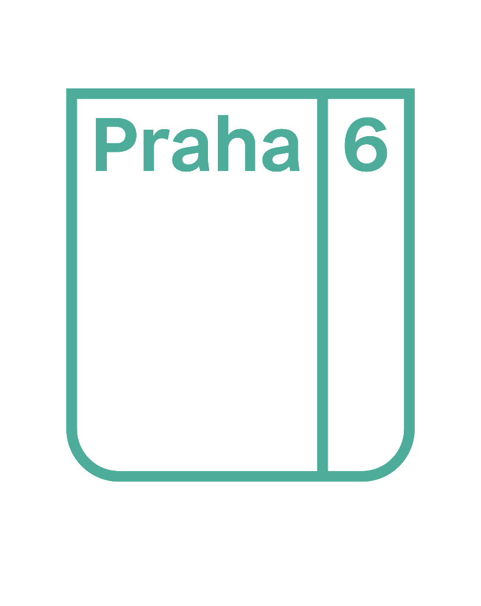

Břevnovský Březňák
O festivalu
Břevnovský Březňák je festival konající se dvakrát ročně - na jaře a na podzim
- na Malém Břevnově.
Přijďte, hrají u nás hvězdy i nováčci folkové, trempské a bluegrassové scény.
Každý ročník zakončuje jam-session, na kterém si zahrají návštěvníci se
skutečnými profíky.
XXII. Břevnovský Březňák, 18. říjen 2025, 18:00


Změna programu vyhrazena.
XXII. Břevnovský Březňák
XXII. Březňák je plánován na 18. října 2025.
Kudy kam
Kulturní dům Bílá Hora
Ke Kulturnímu domu 14
163 00 Praha 6 – Řepy
Nejsnáze se k nám dostanete tramvají 22 či 25 do zastávky Bílá Hora. Tato
konečná tramvaje je od kulturního domu vzdálená asi 600 metrů.
Do zastávky Bílá Hora jezdí také autobusy 164, 168 a 347.
Domů se dostanete i v noci tramvají 97.
Když vystoupíte z
tramvaje, vydáte se na nejbližší přechod přes hlavní, který je na druhé straně
točny tramvají. Přejdete, půjdete dál směrem z města, dáte se po pěší cestě
přes malou loučku. Pak se dáte rovně, a nakonec zahnete třetí ulici doprava.
Na rohu už uvidíte KD Bílá Hora.
Úplně nejblíž ke kulturnímu domu (asi 350 metrů) je zastávka autobusu 164 Selských
baterií.
Rezervace lístků
Pro rezervaci lístků nás kontaktujte nás na e-mailu
bbfest@seznam.cz
nebo na telefonu
736 227 646.
Lístek je také možné zakoupit na Notování.
Cena lístku je 440 korun, je možné uplatnit individuální slevu pro studenty a
děti. Děti do 5 let neplatí.
Poskytujeme slevu 10% pro držitele karty Kultovka.
Své lístky si vyzvednete až na místě u pokladny.
Kontakt
Uplynulé ročníky
- Falešná Karta
- Saša Niklíčková
- Choroši
- Brzdaři
- Sunny Side
- Choroši
- Lucie Dolejšová, Jana Rychterová, Franta Vlček
- Pacifik
XV. Břevnovský Březňák 19. března 2022
- Pacifik
- Jitka Vrbová
- Slávek Janoušek s kapelou
- Choroši
- VilMa
- Choroši
- Hop a Šavani
- Faux Pase Fonet
- Sunny Side
- host: Franta Vlček - písničkář
XIII. Břevnovský Březňák 19. června 2021
- Epydemye
- Jana Rychterová a spol.
- The Folks
- Jitka Vrbová a Honza Früwirth
- Franta Vlček
- Choroši
- host: Helena Maršálková - zpěvačka skupiny Pacifik
Pauza kvůli Covidu.
XII. Břevnovský Březňák 19. října 2019
- Hop a Šavani
- Gladly SW
- Terrakota
- Pavel Čadek
- Choroši
- host: Joe Robinson a Standa Barek - zvláštní host
XI. Břevnovský Březňák 23. března 2019
- Jan Matěj Rak, Franta Vlček
- Pacifik
- Choroši
- Jitka Vrbová, Honza Früwirth
- host: Jiří Max Rohan - kapelník skupiny Chudinkové
- Terrakota
- Martin Rous
- Hobboes Revival Alva
- Spirituál Kvintet
- host: Jiří Tichota - kapelník Spirituál kvintetu
IX. Břevnovský Březňák 24. března 2018
- Robert Křesťan a Trapeři
- Choroši
- Pětník
- Terrakota
- host: Franta Hacker - kapelník KTO a šerif Ztracenky
VIII. Břevnovský Březňák 21. října 2017
- Láďa Zítka
- Slávek Maděra
- Sekvoj
- Poutníci
- Jak je neznáte
- host: Ivo Šmoldas - kulturní publicista a básník
- Sekvoj
- Sabina Uxová
- Martin Rous
- Pacifik
- Nové Struny
VI. Břevnovský Březňák 22. října 2016
- Stráníci
- Flastr
- Pepa Štross
- Sekvoj
V. Břevnovský Březňák 19. března 2016
- Sekvoj
- Jitka Vrbová a Honza Früwirth
- Brzdaři
- Honza Jícha
- host: Janek Kroupa - ivestigativní novinář
- Sekvoj
- Isara
- Alternativa
- Standa Haláček
- host: Wabi Daněk - písničkář
III. Břevnovský Březňák 28. února 2015
- Sekvoj
- Jan Matěj Rak a Franta Vlček
- Tomáš Berka a Corpus Delicti
- Burizon
- host: Josef Klíma - ivestigativní novinář a hudebník
II. Břevnovský Březňák 18. října 2014
- Sekvoj
- Disneyband
- Bodlo
- EKG-M
- hosté: Mirek Kovářík - recitátor, Tony Linhart - trampská legenda
- Sekvoj
- František Vlček
- Veget
- Hluboké nedorozumění
- host: Stanislav Motl - investigativní novinář
© 2014 - 2025 Břevnovský Březňák